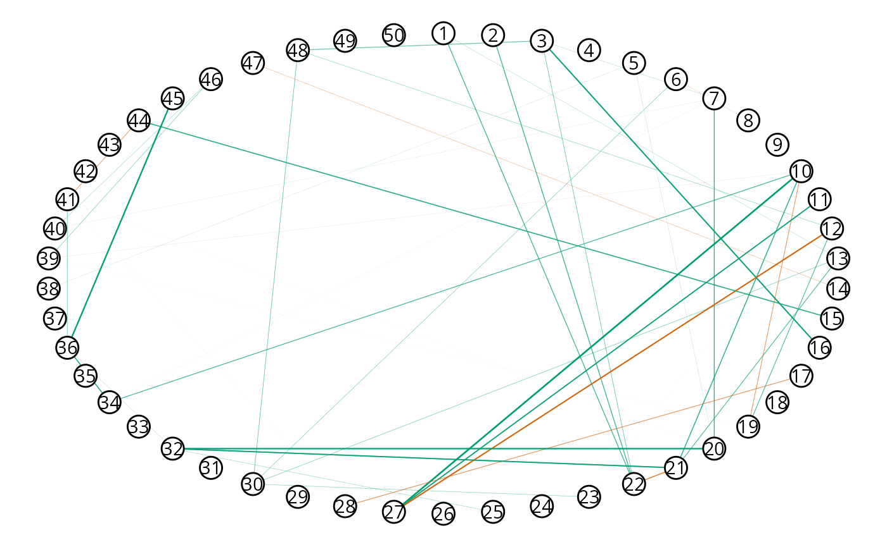
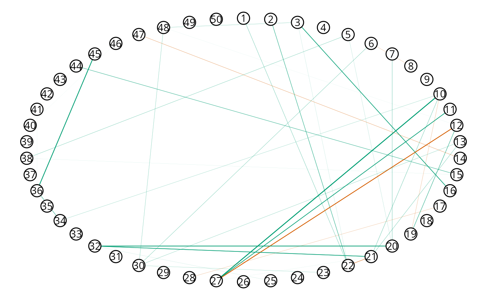

GGMncv is set up for low-dimensional settings, that is, when the number of observations () is much greater than the number of nodes (). This is perhaps not typical in the Gaussian graphical modeling literature, and is a direct result of my (the author of GGMncv) field encountering low-dimensional data most often (see for example Williams et al. 2019; Williams and Rast 2020). As a result, the defaults are honed in for low-dimensional data!
Of course, GGMncv can readily be used for high-dimensional data. In what follows, I highlight several issues that may arise, in addition to solutions to overcome those issues.
By default, GGMncv uses the sample based (inverse) covariance matrix for the initial values, which is needed for employing nonconvex regularization. When , GGMncv will produce an error because the sample based (inverse) covariance matrix cannot be inverted in this situation.
For example, notice the error when running the following code:
library(GGMncv)
# p > n
set.seed(2)
main <- gen_net(p = 50,
edge_prob = 0.05)
set.seed(2)
y <- MASS::mvrnorm(n = 49,
mu = rep(0, 50),
Sigma = main$cors)
fit <- ggmncv(cor(y), n = nrow(y))
#> Error in solve.default(R): system is computationally singular: reciprocal condition number = 1.74287e-19The solution is to provide an function for the initial matrix. To
this end, GGMncv includes the function
lediot_wolf which is a shrinkage estimator (Ledoit and Wolf 2004). It is important to note
that any function can be used, so long as it return the inverse
correlation matrix.
fit <- ggmncv(cor(y), n = nrow(y),
penalty = "atan",
progress = FALSE,
initial = ledoit_wolf, Y = y)Notice the Y = y, which is used internally to pass
additional arguments via ... to the function provided in
initial.
The conditional dependence structure can then be plotted with

Here is an example of providing a function.
initial_ggmncv <- function(y, ...){
Rinv <- corpcor::invcor.shrink(y, verbose = FALSE)
return(Rinv)
}
fit2 <- ggmncv(cor(y), n = nrow(y),
penalty = "atan",
progress = FALSE,
initial = initial_ggmncv,
y = y)
plot(get_graph(fit2),
node_size = 5)
Perhaps it is of interest to compare performance, given that different initial values were used.
# ledoit and wolf
score_binary(estimate = fit$adj,
true = main$adj,
model_name = "lw")
#> measure score model_name
#> 1 specificity 0.9707904 lw
#> 2 sensitivity 0.2786885 lw
#> 3 precision 0.3333333 lw
#> 4 recall 0.2786885 lw
#> 5 f1_score 0.3035714 lw
#> 6 mcc 0.2716790 lw
# Shaffer and strimmer
score_binary(estimate = fit2$adj,
true = main$adj,
model_name = "ss")
#> measure score model_name
#> 1 specificity 0.9793814 ss
#> 2 sensitivity 0.2786885 ss
#> 3 precision 0.4146341 ss
#> 4 recall 0.2786885 ss
#> 5 f1_score 0.3333333 ss
#> 6 mcc 0.3121125 ssPerhaps a trickier situation is when the covariance matrix can be inverted, but it is still ill-conditioned. This can occur when approaches but does not exceed . Here performance can be very bad.
# p -> n
main <- gen_net(p = 50,
edge_prob = 0.05)
y <- MASS::mvrnorm(n = 60,
mu = rep(0, 50),
Sigma = main$cors)
fit <- ggmncv(cor(y), n = nrow(y),
penalty = "atan",
progress = FALSE)
score_binary(estimate = fit$adj,
true = main$adj)
#> measure score
#> 1 specificity 0.08676976
#> 2 sensitivity 0.95081967
#> 3 precision 0.05173952
#> 4 recall 0.95081967
#> 5 f1_score 0.09813875
#> 6 mcc 0.02933511This is extremely problematic because there was no error, and the performance was terrible (note: 1 - specificity = the false positive rate).
One solution is again to provide a function to
initial.
fit <- ggmncv(cor(y), n = nrow(y),
progress = FALSE,
penalty = "atan",
initial = ledoit_wolf, Y = y)
score_binary(estimate = fit$adj,
true = main$adj)
#> measure score
#> 1 specificity 0.9896907
#> 2 sensitivity 0.1475410
#> 3 precision 0.4285714
#> 4 recall 0.1475410
#> 5 f1_score 0.2195122
#> 6 mcc 0.2299709An additional solution is to use -regularization, i.e.,
fit_l1 <- ggmncv(cor(y), n = nrow(y),
progress = FALSE,
penalty = "lasso")
score_binary(estimate = fit_l1$adj,
true = main$adj)
#> measure score
#> 1 specificity 0.99226804
#> 2 sensitivity 0.08196721
#> 3 precision 0.35714286
#> 4 recall 0.08196721
#> 5 f1_score 0.13333333
#> 6 mcc 0.15192020A quick comparison of KL-divergence